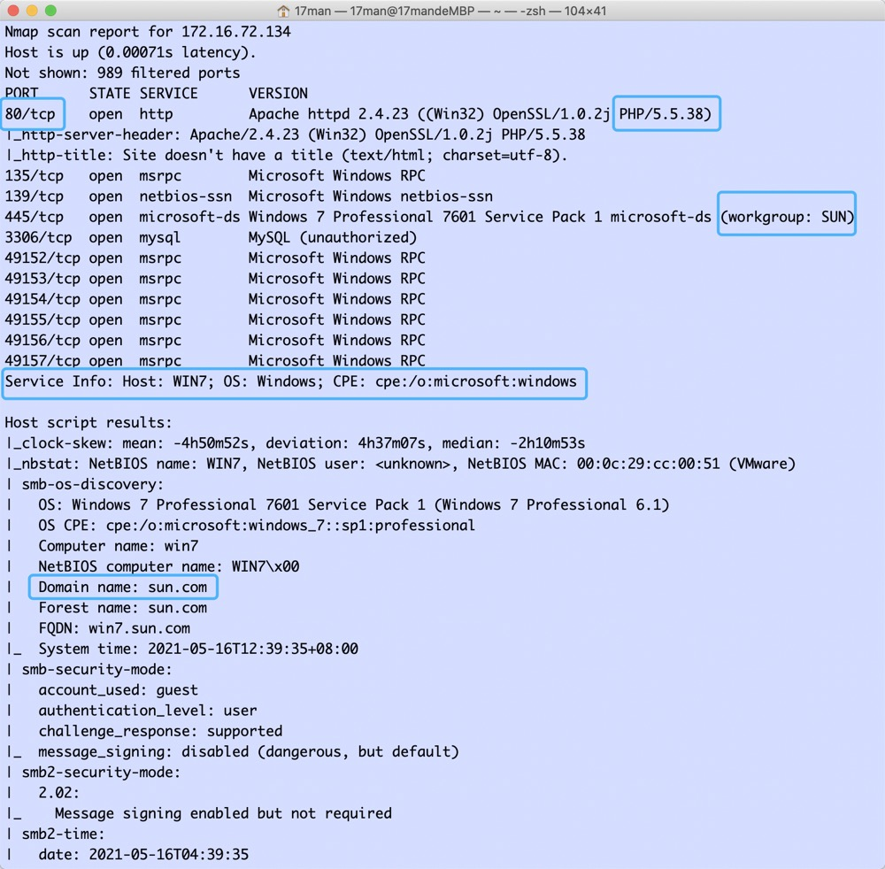

前言
环境搭建
一台win7(双网卡)作为服务器模拟连通内外网，同域内一台DC作为域控
网络拓扑图
win7服务总是断开，所以下文步骤中ip改变是因为我重启了
外网打点
nmap扫描一下端口以及探测，发现web端口与服务器系统信息
首先看一下web服务，发现是TP框架，扫描一下目录，发现可疑目录

看起来很像是一个木马，爆破了1w条无果，找找其它线索
获取win7权限
本来想看一下runtime下有没有日志，出了个报错页面，得到TP版本，搜一下EXP一把梭
测试了一下可以打通
写个马进public目录试试
成功连上，开启终端收集一下网卡信息，发现有域
收集系统信息，为下一步内网渗透做准备
msf生成payload，与powershell建立方向连接

获取下内网情况
ping一下域控dc，拿到内网ip
内网横向移动
mimikaz模块抓取密码，因为系统位数不同，先迁移到64位进程中
成功获取域管理员跟域用户密码
使用msf的psexec模块登录dc，因为dc不通外网，所以还用ew建立了sock5代理进行横向， 但一直打不通换了个隧道继续尝试。

这里虽然获取到session，防火墙也从win7那边关闭了。 但还一直timeout，不知道是环境问题还是我的问题，也没法继续往下利用

上文已经知道打的补丁非常少，所以开cs尝试票据攻击
留下持续后门
清除痕迹
There Is Nothing Below
 Turn at the next intersection.
Turn at the next intersection.